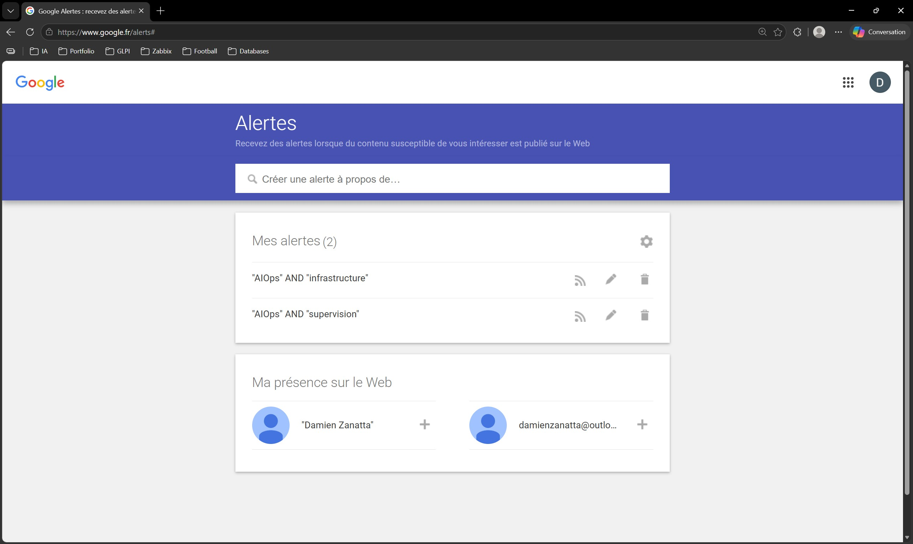

Sujet : l’AIOps au service de la supervision d’infrastructure
Problématique : comment l’AIOps transforme-t-il la supervision classique en automatisant la détection des anomalies et en accélérant l’identification des causes d’incident réseau ?
Problématique : comment l’AIOps transforme-t-il la supervision classique en automatisant la détection des anomalies et en accélérant l’identification des causes d’incident réseau ?
Les infrastructures modernes combinent cloud hybride, virtualisation, services distribués et dépendances réseau nombreuses. Les outils de supervision classiques produisent donc une quantité importante de métriques, journaux et alertes.
L’enjeu n’est plus seulement de collecter l’information, mais de la corréler afin de réduire le bruit, prioriser les incidents et identifier plus rapidement la cause racine.
L’AIOps désigne l’utilisation de l’intelligence artificielle, du Machine Learning et de l’analyse de données pour améliorer les opérations informatiques. Dans un contexte SISR, il s’agit d’un complément aux outils de supervision, capable de détecter des comportements anormaux et de faciliter le diagnostic.
La veille repose sur une approche hybride associant collecte automatisée, suivi de sources spécialisées et sélection manuelle des contenus les plus pertinents.
Des alertes Google sont configurées avec des requêtes précises, par exemple “AIOps” AND “infrastructure” et “AIOps” AND “supervision”, afin de limiter le bruit informationnel.

Feedly permet de centraliser les flux de presse spécialisée et les publications d’éditeurs ou d’acteurs du secteur de la supervision.

Les articles retenus sont sélectionnés pour leur lien direct avec l’option SISR : supervision, réduction du bruit d’alertes, analyse de cause racine, automatisation, exploitation et continuité de service.
L’AIOps ne remplace pas l’administrateur système ou réseau. Il agit comme un outil d’aide à l’exploitation, utile lorsque la volumétrie des données dépasse les capacités d’analyse manuelle immédiate.
Cette veille montre aussi que la qualité des données reste essentielle : une supervision mal structurée, des actifs mal référencés ou des journaux incomplets limitent fortement l’efficacité de l’automatisation.
Exemple concret d’intégration de capacités prédictives et d’analyse dans une solution de supervision.
Référence : Mourad Krim, 20 juin 2023.
Article utile pour comprendre l’évolution de l’ITOM et le besoin de contrôle dans des environnements distribués.
Référence : Antoine Olivier, 2 juillet 2024.
Lecture méthodologique sur la manière d’intégrer l’IA aux opérations IT sans négliger l’expertise humaine.
Référence : Wisdom Ekpotu, 23 avril 2026.
Ressource de référence pour définir l’AIOps, ses usages et ses bénéfices dans les opérations informatiques.
Référence : Alan Zeichick, 4 novembre 2025.
Article de vulgarisation sur l’automatisation des opérations IT et le passage d’une posture réactive à une posture plus proactive.
Référence : 20 février 2026.
Article permettant de nuancer les promesses de l’automatisation : les SLA et la qualité de service restent liés à l’ingénierie et au pilotage humain.
Référence : Clément Bohic, 20 avril 2026.